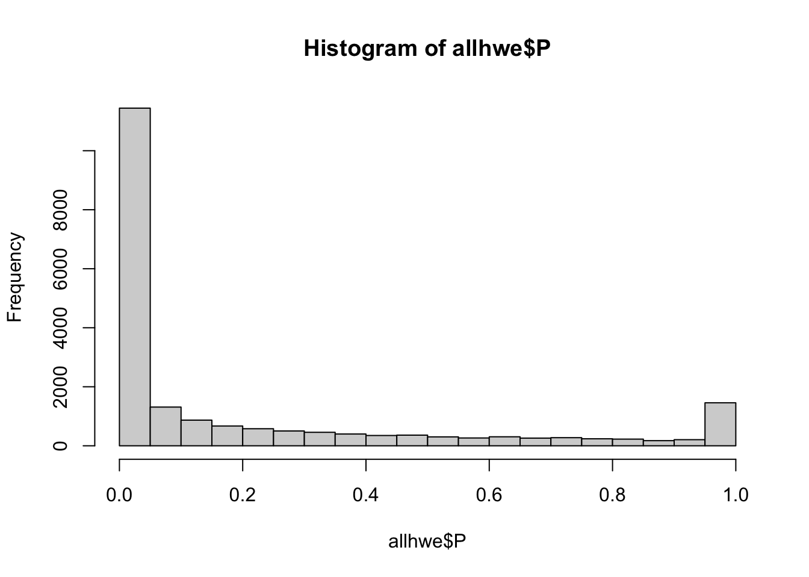

#testing Hardy-Weinberg Equilibrium with population structurepopinfo =read_tsv(paste0(work.dir,"relationships_w_pops_051208.txt"))
Rows: 1301 Columns: 7
── Column specification ────────────────────────────────────────────────────────
Delimiter: "\t"
chr (5): FID, IID, dad, mom, population
dbl (2): sex, pheno
ℹ Use `spec()` to retrieve the full column specification for this data.
ℹ Specify the column types or set `show_col_types = FALSE` to quiet this message.
Rows: 2504 Columns: 6
── Column specification ────────────────────────────────────────────────────────
Delimiter: "\t"
chr (5): #IID, PAT, MAT, SuperPop, Population
dbl (1): SEX
ℹ Use `spec()` to retrieve the full column specification for this data.
ℹ Specify the column types or set `show_col_types = FALSE` to quiet this message.
## what happens if we calculate HWE with this mixed population?if(!file.exists(glue::glue("{work.dir}output/allhwe.hwe")))system(glue::glue("~/bin/plink --bfile {work.dir}hapmapch22 --hardy --out {work.dir}output/allhwe"))allhwe =read.table(glue::glue("{work.dir}output/allhwe.hwe"),header=TRUE,as.is=TRUE)hist(allhwe$P)

qqunif(allhwe$P,main='HWE HapMap3 All Pop')
Warning in qqunif(allhwe$P, main = "HWE HapMap3 All Pop"): thresholding p to
1e-30
pop ="CHB"pop ="CEU"pop ="YRI"for(pop inc("CHB","CEU","YRI")){## what if we calculate with single population? popinfo %>%filter(population==pop) %>%write_tsv(path=glue::glue("{work.dir}{pop}.fam") )if(!file.exists(glue::glue("{work.dir}output/hwe-{pop}.hwe")))system(glue::glue("~/bin/plink --bfile {work.dir}hapmapch22 --hardy --keep {work.dir}{pop}.fam --out {work.dir}output/hwe-{pop}")) pophwe =read.table(glue::glue("{work.dir}output/hwe-{pop}.hwe"),header=TRUE,as.is=TRUE)hist(pophwe$P,main=glue::glue("HWE {pop} and founders only"))qqunif(pophwe$P,main=glue::glue("HWE {pop} and founders only"))}
Warning: The `path` argument of `write_tsv()` is deprecated as of readr 1.4.0.
ℹ Please use the `file` argument instead.
#effect of population stratification on GWAS## read igrowthigrowth =read_tsv("https://raw.githubusercontent.com/hakyimlab/igrowth/master/rawgrowth.txt", show_col_types =FALSE)
Call:
lm(formula = growth ~ population, data = igrowth)
Residuals:
Min 1Q Median 3Q Max
-58821 -18093 -2242 15896 98760
Coefficients:
Estimate Std. Error t value Pr(>|t|)
(Intercept) 73080.8 938.2 77.894 < 2e-16 ***
populationCEU -2190.1 1175.4 -1.863 0.0625 .
populationCHB 9053.1 2043.9 4.429 9.73e-06 ***
populationJPT 3476.8 2034.8 1.709 0.0876 .
populationYRI -7985.2 1137.2 -7.022 2.61e-12 ***
---
Signif. codes: 0 '***' 0.001 '**' 0.01 '*' 0.05 '.' 0.1 ' ' 1
Residual standard error: 24160 on 3591 degrees of freedom
(130 observations deleted due to missingness)
Multiple R-squared: 0.0345, Adjusted R-squared: 0.03342
F-statistic: 32.08 on 4 and 3591 DF, p-value: < 2.2e-16
## run plink linear regression only if it hasn't been run alreadyif(!file.exists(glue::glue("{work.dir}output/igrowth.assoc.linear")))system(glue::glue("~/bin/plink --bfile {work.dir}hapmapch22 --linear --pheno {work.dir}igrowth.pheno --pheno-name growth --maf 0.05 --out {work.dir}output/igrowth"))igrowth.assoc =read.table(glue::glue("{work.dir}output/igrowth.assoc.linear"),header=T,as.is=T)hist(igrowth.assoc$P)
qqunif(igrowth.assoc$P)
## install.packages("qqman")library(qqman)
For example usage please run: vignette('qqman')
Citation appreciated but not required:
Turner, (2018). qqman: an R package for visualizing GWAS results using Q-Q and manhattan plots. Journal of Open Source Software, 3(25), 731, https://doi.org/10.21105/joss.00731.